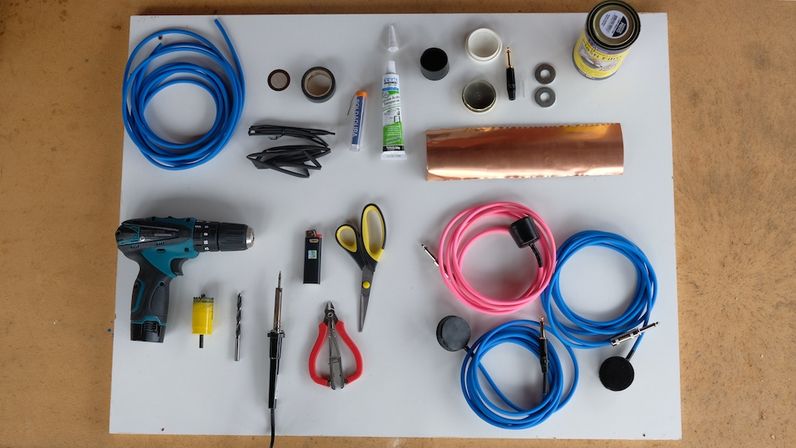
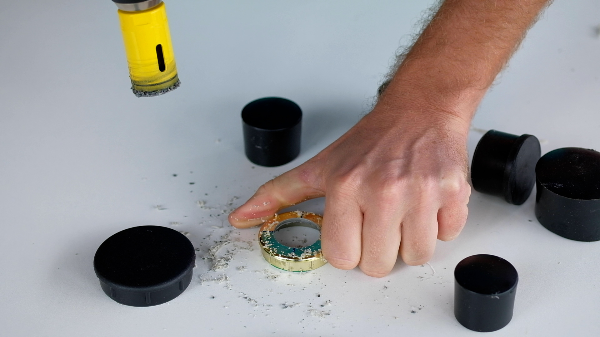
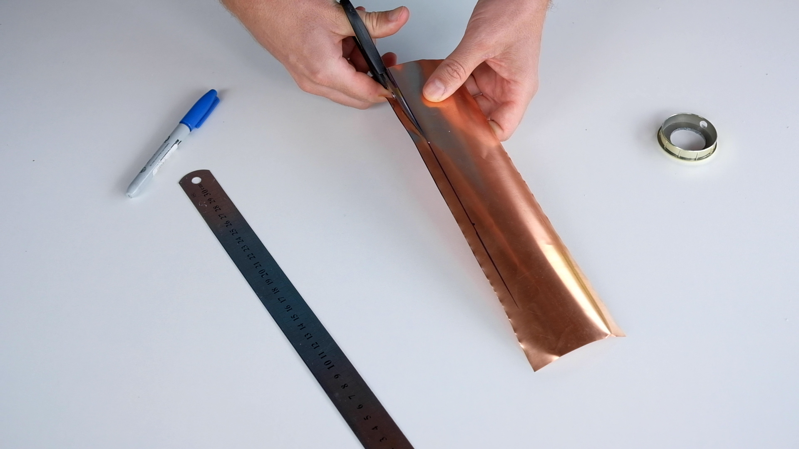
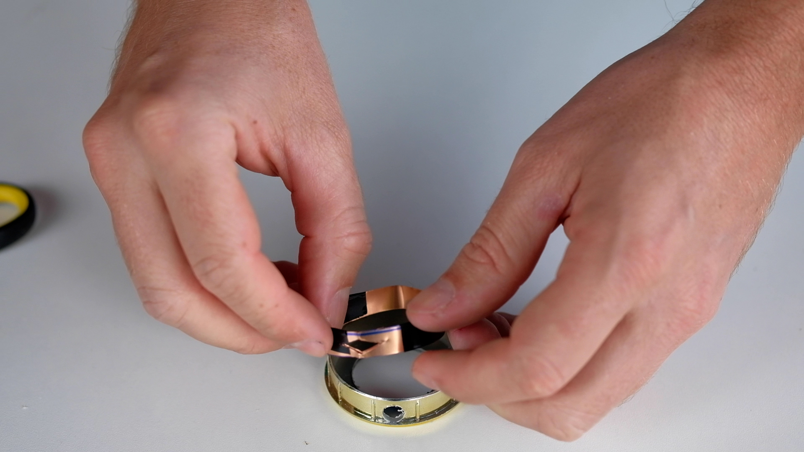
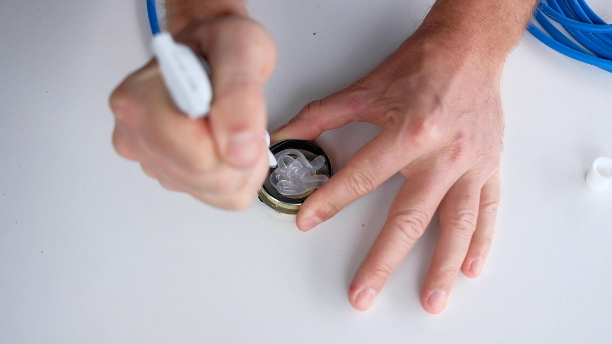
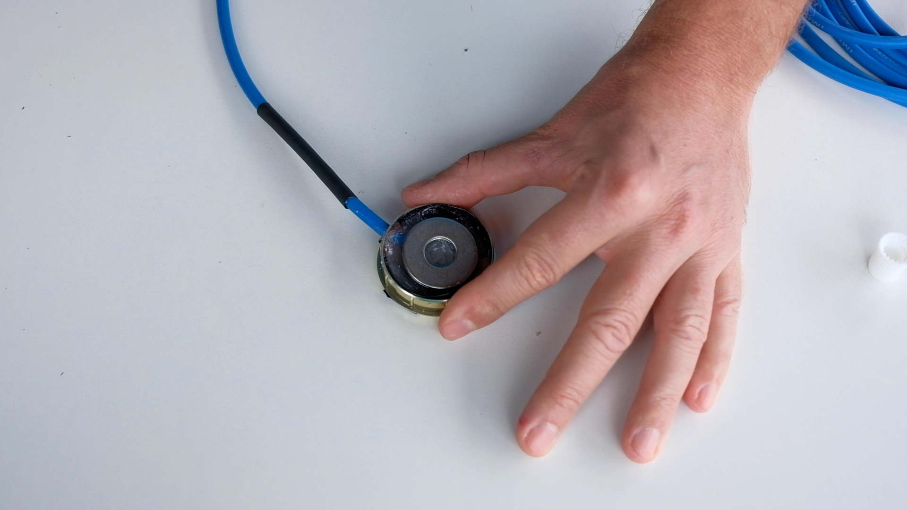
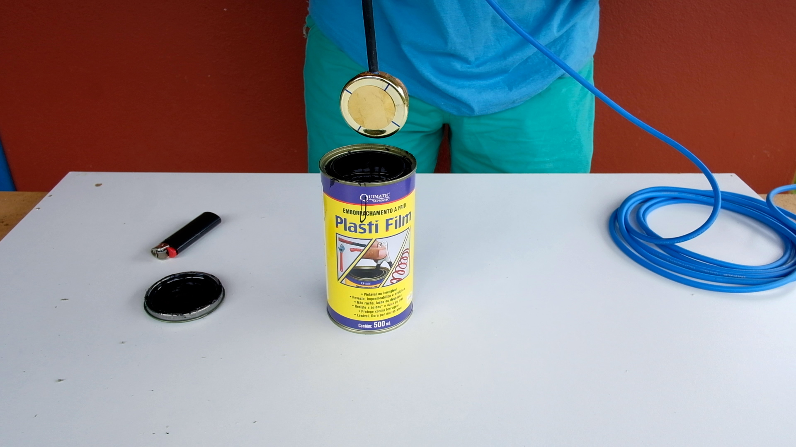

DIY hydrophone
A simple tutorial to do an hydrophone (aquatic microphone), step by step.
do it yourself following each step below.

Materials:
1. Mic cable (mono)
2. Thermofit
3. Piezoelectric sensor (on our video we used a 1″ piezo)
4. Plastic lids or “feet” for chairs or tables (with a diameter about 1cm bigger than piezoeletric’s diameter)
5. 1/4″mono jack plug
6. Iron washers
7. Rubber coating
8. Copper foil
9. Solder
10. Silicon
11. Electric tape
Tools:
1. Cutter
2. Scissors
3. Drilling machine
4. Drill
5. Hole saw (with a diameter a bit smaller than piezoelectric diameter)
6. Cutting plier
7. Soldering iron
8. Ruler
9. Permanent ink pen
10. Lighter
step 1: plastic lid preparation




-
Choose a plastic lid with a diameter about 1cm bigger than piezoeletric’s diameter. In our video we used a 1″ piezo (25mm)
-
With a ruler mark the center of the plastic piece
-
Make a hole with the drilling machine and the hole saw. (The hole saw diameter should be a bit smaller than piezoelectric diameter)
-
On the side of the plastic lid make a hole with the drill. It’s where the mic cable will pass through.
step 2: copper foil




We will use the copper to protect the hydrophone from electro-magnetic interference.
-
Measure the plastic lid height
-
Cut the copper foil as a strip with the same height.
-
Take the copper strip and internally cover the lid.
-
Fix the copper ring with electrical tape
-
With scissors cut a hole on the side of the ring Note: it exist a self-adhesive copper foil which could be better for this use (and easier to work with)
step 3: piezo and cable soldering


-
Position the piezo centered outside of the lid. The terminals must be seen inside the hole.
-
Fix it with electric tape. It will be removed on step 5.
-
Before soldering put 2″of thermofit on both sides of the cable.
-
Pass the mic cable through the lid and copper holes and solder it on piezo’s terminals : ground on the external part, positive on the internal part of the piezo.
-
Solder the 1/4″mono jack plug on the other side of the cable.
-
After soldering, reposition the thermofit and get it hot with the lighter.
Note: it would be possible to use a stereo cable to have probably better shielding. You should then connect ground to the copper foil, positive on the center and negative on the external part of the piezo.
step 4: silicon and iron washers




-
Fill half of the lid with silicon.
-
Put 2 iron washers inside it. (In order to give some weight to the hydrophone)
-
Fill the rest of the lid with silicon.
-
Cut a copper foil circle, with the same diameter as the lid.
-
Put the copper circle on the top of the silicon, so it will get glued._ Wait until the silicon dries (about 30 minutes)
Note: you could put some weight on top of the copper foil, so it will get straighter.
step 5: rubber coating




-
Carefully remove the electric tape from the piezo.
-
Dip the lid in the rubber coating can and take it out very slowly.
-
Let it dry for around 30 minutes and repeat this step 2 or 3 times.
-
For a uniform rubber layer, you can turn the lid upside down while drying
step 6: Listening
-
Try your hydrophone and share your recording
-
Enjoy !!
TUTORIAL DONE by Sara Lana & Félix Blume

Other nice hydrophone tutorials where we learned to construct ours:
-
Phase 57 give a very similar way of building a contact microphone, shield as ours, and I guess that could easily be used as a hydrophone
-
Zach Poff give a step by step building of a contact mic in a very easy way. With an interesting list of other places to buy some contact mic online (at the bottom of the page)
-
John Grzinich share here a nice way to build a DIY hydrophone
If you want to buy some, here are a few links :
-
Aquarian is one of the famous constructor of very good and cheap hydrophones, already very famous
-
Dolphin Ear is doing very good hydrophones too (a bit more expensive)
-
Cold Gold has a lot of different models of contact mic and hydrophone, at very good prices (including some piezo and copper foil for DIY mic)
-
Jez Riley French is doing and selling a few models of contact and hydrophone since a long time now (at a good price too)
-
Crank Sturgeon sells different models of contact mic (some are waterproof) done by himself
-
Monkey Sound is doing and selling a few nice models too
-
Geophone by LOM Audio. It is not an hydrophone, but it’s a very nice tool for contact recording
-
Ambient sells ones of the best hydrophones, but with a much higher price
Missing a link to a nice DIY tutorial or another nice way of buying an hydrophone? Contact us!
https://saralana.xyz/about & https://felixblume.com/contact